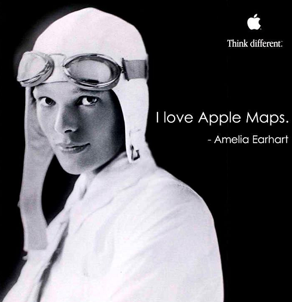
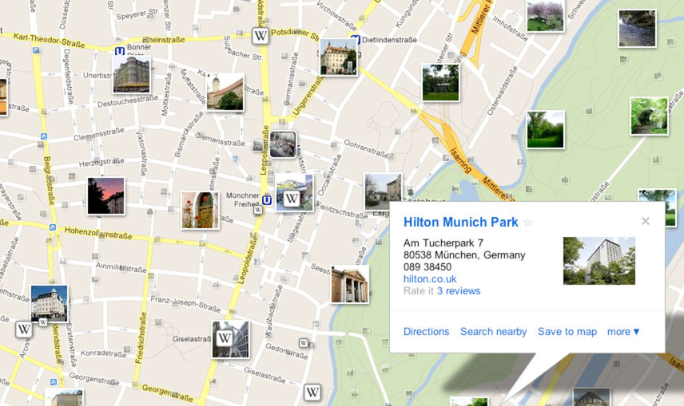
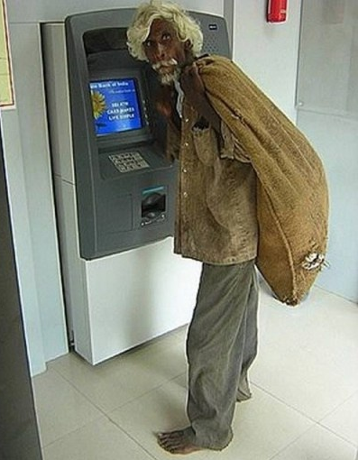

Created by Vitaly Domnikov / @dotcypress


location: [x, y]
location: {x:1, y:2}
db.atms.ensureIndex( { 'location' : '2d' } )
db.atms.find({location: { $near: [-70, 40]}})
db.runCommand({geoNear: "atms", near: [x, y]})
{
"ns" : "test.places",
"results" : [
{
"dis" : 3,
"obj" : {
"_id" : ObjectId(" ... "),
"location" : [-73, 39]
}
}
],
...
}
db.atms.find({
location: { $near: [-70,40], $maxDistance : 20 }
})
db.runCommand({
geoNear: "atms", near:[x,y], $maxDistance : 20
})
find(..$nearSphere..)find(..$centerSphere..) geoNear(..{ spherical: true }..)The radius of the Earth is approximately:
db.runCommand({
geoNear: "atms",
near: [ -74, 40.74 ],
spherical: true,
distanceMultiplier: 6378.137
})
db.atms.find({"location":
{"$within": {"$center": [ [-74, 40.74], 10 ]}}
})
db.atms.find({"location":
{"$within": {"$box": [ [-74, 40.74] ]}}
})
db.atms.find({"location":
{"$polygon": {"$box": [ [ 0, 0], [3, 3], [6, 0] ] }}
})
db.atms.find({"location": [ [-74, 40.74] ]})